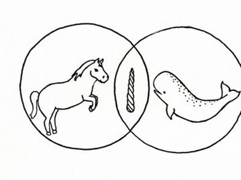
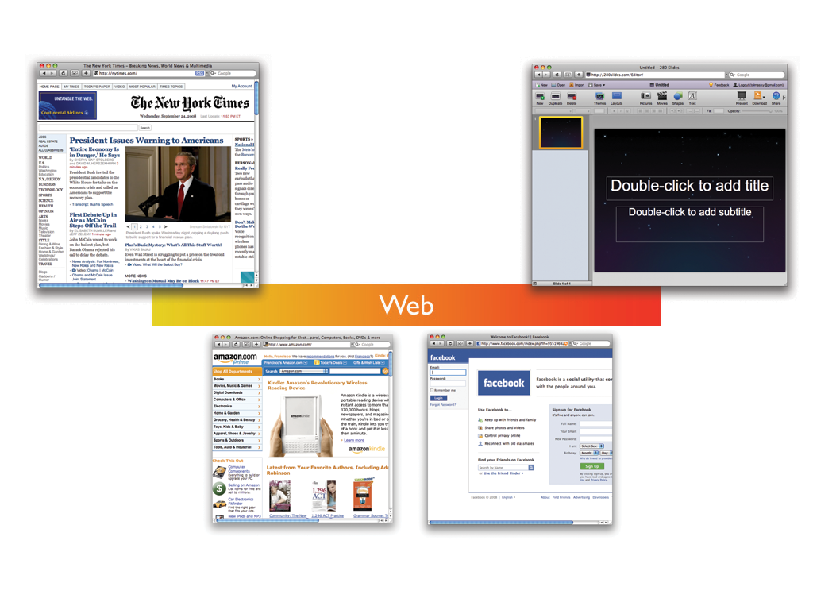
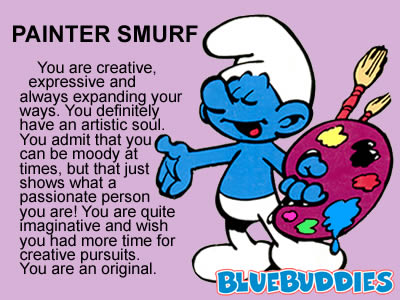
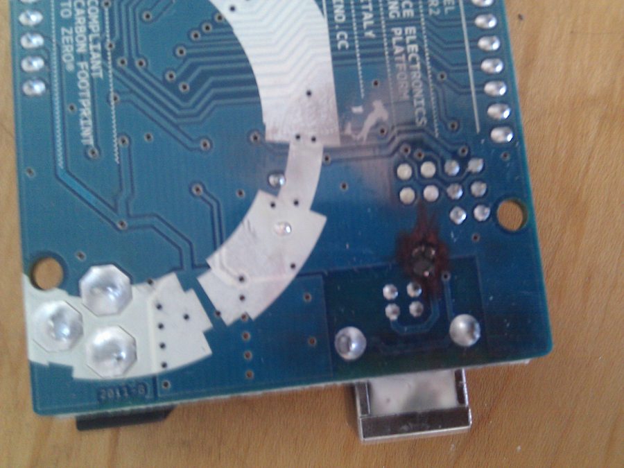

hello world
- head of research at shopify
- cappuccino core contrib
- recovering reddit addict

as a community
we want to build great apps

it's really hard
at shopify
we have a big ass app to implement
i'm the lone javascript developer in a sea of rubyists
aside: i'm with chris in not pigeonholing developers
designers

i played with everything
- backbone
- knockout
- angular
- javascriptmvc
- ender
- spine, though that was more recent
you are all amazing
i love you all
please keep innovating
A CREVASSE
goals
MAKE.EVERYTHING.FAST.
faster than ryan completely changes the node apis
- immediate startup
- light speed runtime
- develop with gusto
maximize developer happiness
- coffee-script
- rails-looking
- the path of least resistance
maximize designer happiness
- designer decoupling
- easy places to put the jquery
- rapid iteration
- the path of least resistance
convention over configuration
convention over configuration
- you write less code
- you know where to put your stuff
- the path of least resistance
powerful bindings
- know when any key on any object changes
- build the whole framework around it
- fast
no templates
- they make designers program
- they ruin the DOM
- they're slow
- they mix logic with design
be a framework, not a library
the dilemma
fuck it.
go big or go home
achievement unlocked:
achieve all goals

batman.js
- fast everything framework
- developer and designer happiness
- convention over configuration
- powerful bindings and better than templates
- the path of least resisitance
alfred: batman's todo manager
get it?
concentrate on the cool stuff
<10kb compressed
~1000 lines of code
no external dependencies
compatible with everything
use with an existing backend
full stack framework
batman node server
uses your same app code for client and server
literally
class MyModel extends Batman.Model
@persist Batmana full stack framework for building batman.js apps end-to-end
if you want it to be
otherwise it's just an awesome, tiny, fast client side framework
TWITTER.CLIENT.EVERYTHING.
$batman gen app twitter
creating twitter/controllers/app.coffee
creating twitter/models/
creating twitter/index.html
creating twitter/README
creating twitter/views/app/index.html
creating twitter/views/
$cd twitter
$batman s
socket.io ready - accepting connections
Batman is waiting at http://127.0.0.1:8124
$batman gen model tweet
creating twitter/models/tweet.coffee
Twitter.Tweet
class Twitter.Tweet extends Batman.Model
@hasMany 'comments'
fetch: (query) ->
new Batman.JSONPRequest(url: 'http://search.twitter.com/search.json', data: {q: query}).success (json) =>
for result in json.results
new Tweet(result).save()$batman gen model comment
creating twitter/models/comment.coffee
Twitter.Comment
class Twitter.Comment extends Batman.Model
@persist Batman
@belongsTo 'post'
@validatesLengthOf 'body', minimum: 3
name: ''
body: ''Twitter.AppController
class Twitter.AppController extends Batman.Controller
index: ->
search: ->
Tweet.fetch(App.get('query'))
Batman.redirect("/#{query}")Twitter.CommentsController
class Twitter.CommentsController extends Batman.Controller
index: (params) ->
@tweet = Tweet.find(params.id)
new: (params) ->
@tweet = Tweet.find(params.id)
@comment = new Comment
@comment.set('tweet', @tweet)comments/index.html
<h1 data-bind="tweet.text">Comments</h1>
<div data-foreach-comment="tweet.comments">
<strong data-bind="comment.name"></strong>:
<span data-bind="comment.body"></span>
</div>twitter_comments
- developers can immediately see what's going on
- designers can independently work in what's comfortable to them
- <100 lines including searching twitter, modeling relationships, and rendering routes and views
batman.js
- fast everything
- developer and designer happiness
- convention over configuration
- powerful bindings and better than templates
- the path of least resisitance
- (optional) full stack framework
<10kb
MIT soon
batmanjs.org
one more thing...
